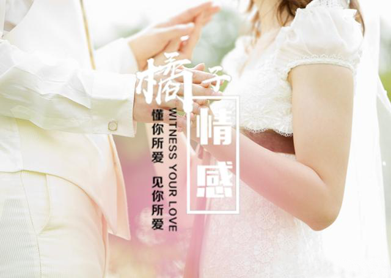

爱情破碎女人绝情离开，坏男人帮你复联挽回爱情！
大家好，我们是橘子情感。专注情感，为爱而生。 从业八年以来，橘子情感始终秉承着“专注情感、专业服务、专心经营”的原则， 致力于为大家提供挽回爱情、挽救婚姻、 分离小三、订制爱情等两性情感服务。
很多男人在自己的感情出现问题的时候，由于男性的惯性思维，只想着去改变结果，而从来都没有去考虑到底用什么样的方法才能够有效的去挽回。要知道一个好的结果，是需要一个不出差错的过程。挽回你的她亦是如此。
今天我会通过一位学员的经典挽回案例，给大家总结一套具有实操性的挽回思路以及方法。
挽回学员：小毅，今年27岁，销售顾问，收入还算可以，有积蓄。
问题关键词：拉黑，跪舔，猜疑心重，占有欲强。
相识到爱慕
小毅和小琪是在一次朋友的聚会上认识的。小毅见到小琪感觉印象不错，就想要去认识她，主动搭讪下，两个人便聊上了，并相互留了微信。
在之后的日子，两个人在微信上聊得很欢快，兴趣、爱好、价值观都很合的来，小毅也对这个女人越来越爱慕了。
爱慕到追求
小琪的美好让小毅感觉到爱情的味道，便开始产生了想要追这个女人的想法。
但是小毅的恋爱经历并不多，对追女孩也不太了解。一直觉得，追女人只要对她足够好，就能感动她。
在追求女人的过程中，小毅每天都对她说早安晚安，也经常给她送好吃的，每个节日都会给她送礼物。经过几个月的不断努力，和朋友的撮合。两个人成功在一起。
热恋到冷淡
在恋爱的初期，两个人过的非常的甜蜜，学员小毅每天接女人上班下班的，约会的时候，去哪里，吃什么，都是随女人的意，小毅认为对女人付出越多，她就会越爱自己。
时间久了，女人的态度似乎越来越冷淡，不会来主动找小毅，也没有之前聊得那么融洽。小毅想这种关系给扭转过来，可是完全没有效果，还把女人给惹生气了，花了一个星期的时间才把她哄了回来。
冷淡生矛盾
经历过这件事之后，女人对小毅就更加冷淡了。小毅甚至开始怀疑女人是不是真的爱他，也害怕会失去她。也是因为这件事之后，小毅开始频频关注女人的朋友圈，总担心不在一起的时候，她会去找其他的男人。时不时我都会询问她在干什么，和谁在一起，要汇报出去时的情况。
女人开始越来越抗拒小毅，有一次，小毅发微信给女人，但是时间过去很久也没有收到回复。然后我在朋友圈里发现她刚更新了动态。看到之后顿时火冒三丈，打电话过去质问女人。没想到她也没有接电话。
后来她解释说，她一直在忙，回到家后发完朋友圈手机就放在一旁充电了，自己洗好澡就睡了。并不是故意的。但是在气头上的小毅完全听不进去女人的解释，冲动之下和对方大吵了一架。
之后发现被对方拉黑了。
尝试的挽回
吵架后的小毅，知道了问题的严重性，害怕要失去对方的情绪驱使下，他开始疯狂地轰炸女人的各种通讯软件送礼物请求她、去她的公司找她，各种方法都用过了。
然而，本来还勉强回复信息的女朋友，在小毅的骚扰下彻底开始躲着他了。

我们专业的导师对学员糟糕的感情之路完全了解到后，判断学员小毅这种情况属于典型的对女人无下限的好，是的自我的框架缺失。并给出了一下的分析：
1、无下限的对女人好
很多人都会犯这样的错误，以为倾尽自己所有的对女生好，来表达自己有多么爱对方。并且认为付出越多，对方就会习惯生活在自己的宠爱里，才会越来越离不开自己。
导师认为：当这种爱过于多，过于频，就像不要钱似的，那么对方也会慢慢觉得这种爱不值钱。
你做的的越多，女人就会觉得你是理所应当的。反过来，女人会觉得自己没有必要再去付出了，女人付出的越是少，这段感情的存在与否对于她来说，价值就也就很低。
其实，单方面的感情是不会长久的，只有两个人的付出趋近于等价值得，才能走的长远。
2、男人没有主见
男人总是把听从女人的意见当做是尊重对方的表现。然而，这样的举动却是会引出男人没有主见、没有想法的反作用。这样的表现会给女人一种没有安全感的感觉，记住，女人需要的是一种被带领感。
3、占有欲强
男人占有欲强势因为心里缺乏安全感，案例中的学员小毅不断要求对方说出自己的行程，所在的位置。其实这就是一种占有欲，只为满足自己的需求而去要求对方，给女人一种束缚感，并且也让女生觉得你是一个生活很乏味的一个人。
4、猜疑心重
从案例中我们看到学员小毅因为女人暂时的不回消息，就打电话去核实。其实这就是一种猜疑心重的表现。
这种表现其实真实的原因是你自身缺乏安全感，根本原因是你不够自信，而不够自信是因为你在爱情中付出了那么多，但是女人却和你的关系越来越远。
这个时候你要考虑，为什么女人会对你冷淡？就是因为你以上的表现，导致你在她的眼里，吸引力越来越低。
所以我们在分手后一定要去分析自身深层次的原因，而不是表面原因。

关于这位学员的挽回我们专业的导师提出了一下的做法：
一、初步试探
1、调整心态
由于之前学员对于女人的错误的挽回举动，导致了目前对方对于学员反感、有压迫感、甚至是将微信拉黑的一个比较糟糕的现状。
因此导师建议从现在开始停止一切死缠烂打，退一步承认现实是为更进一步推进关系。重新以一种好的心态，审视自身的不足。
2、试探态度
学员和女朋友无法直接联系，因为微信是被拉黑的状态。所以导师建议利用了共同好友，进行信息传达。慢慢的对方已经不再排斥小毅。
再通过一些事情请女人帮忙的理由加回微信，经过一段时间的冷静，再加上导师的调教，用语言的方式扭转两个人之前僵局一样的状态，恢复到朋友关系。
二、二次吸引
小毅自身存在问题没有主见、猜疑心重等缺点，因此已经失去对女人初见时的吸引力，因此就要全面提升自己，变成一个更好的人，就需要重新构建吸引力。并且你一定要在这个阶段深刻反省过去两个人之间的问题，找出所有的原因并且加以改变。
三、全面挽回
1、制造暧昧
在导师指导下，经过几次微信上的互动，对方对你不再抗拒，关系渐渐得到恢复和缓和。
这时候千万不能操之过急的去表白，否则只会前功尽弃，你要做的是可以在聊天中不经意的提起一些你们之间的好的回忆、聊一些生活上的事情并很自然的流露出你的改变。
切记不要过于主动，应该给对方的情绪进行推拉，才能让对方能更好的确定对你的感觉。
2、发起邀约
你们之间的感情升温情况如果感觉不错，这时候导师会提醒你主动发起邀约，利用约会进一步推进彼此关系，要求在导师指导下，策划一场与众不同约会，给对方更好的约会体验，提供足够情绪价值，最终重归于好。
以上是这位学员的挽回案例，每段感情中问题的出现的原因可能具有个性化，但是解决的方法也有很多共性的地方，比如自身建设的提升、对对方情绪的把握等，当然这都需要专业的情感挽回导师去帮助你，毕竟挽回的道路上容不得一点的差错。
关于两性之间的情感，其实还有很多因素会影响最终的事态走向。很多朋友，在挽回的道路上，都有着各自的迷茫，在搞清楚核心问题前，贸然自己去尝试，甚至套用一些网上看到的皮毛，将对方变成了“试验品”，导致情况进一步恶化。
橘子情感从业多年以来，对于爱情挽回和情感狙击也是自成一套，帮助近万例的男女成功收获幸福。如果您有情感问题，一定要及时采取有效措施解决，不要等到失去了才后悔莫及。
{kind=link}